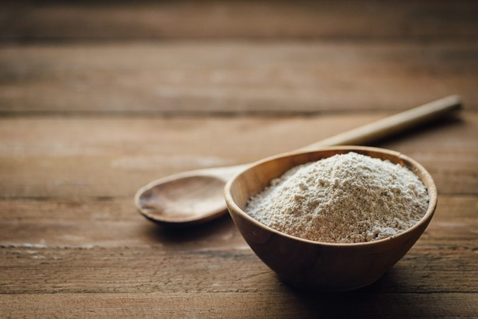
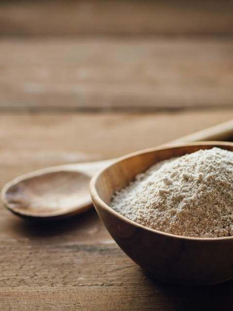

Oat Flour – Made from Rolled Oats
Oat Flour
Oat flour is a flour that is made from ground oats. You can use raw rolled oats or raw oat groats. Today, I am sharing with you my experience with raw rolled oats. Rolled oats have been rolled flat and dried. In most cases, they are steamed before being rolled, which means they’re not raw. However, raw rolled oats do exist and are usually stocked in specialty health food shops or found online. You can order raw oats through Blue Mountain Organics and Natural Zing.

Raw oats can go rancid, and as a result, they are usually cooked before processing to make them more shelf-stable. Therefore, if making oat flour from raw rolled oats, it is a good idea to make sure it is fresh before making the flour. To extend the shelf life of the flour once created, store it in an airtight container in a cool, dry place, or you can freeze it.
Oats can be incredible if you have digestive issues. They are rich in insoluble fiber, which scrubs through the intestines, moving food along and helping to prevent constipation. I know, I know… I am always talking about the digestive system. I can’t help it… if we don’t take care of it, how can it take care of us?
Compromised Digestion?
If you have compromised digestion, it is vital to learn to prepare oats correctly. If you struggle with raw oats, it might be due to preparing them incorrectly.
Whether using oats in raw, cooked, or baked recipes, soaking (sprouting if using groats) will help to neutralize a portion of the phytic acid, which makes the nutrients available for absorption. This process may even lessen sensitivity reactions to particular oats and other grains. In the end, everyone will actually benefit, nevertheless, from the increase of nutrients and greater ease of digestion. So, please don’t skip this process before making the oat flour.
So just to give you an idea… 9 cups dry rolled oats = 8 cups dehydrated = 2 1/2 cups flour.

Ingredients:
Yields 2 1/2 cups flour
- 9 cups rolled, gluten-free oats or raw oat groats, soaked
Preparation:
- After you have followed the instructions on how to soak the oats, be sure to rinse them thoroughly and then hand-squeeze out any excess water. By doing this, it will speed up the drying process.
- Spread the oats out in a thin layer on the teflex sheet that comes with the dehydrator. If you have them spread too thick, they have a higher chance of fermenting, which will give them a sour taste.
- Dry at 145 degrees (F) for 1 hour, then reduce to 115 degrees (F) for 6-8 hours or until completely dry.
- Why do I start the dehydrator at 145 degrees (F)? Click (here) to learn the reason behind this.
- Grind the dehydrated oats in either a dry grain blender container, spice grinder, coffee grinder, or a Bullet. A food processor won’t get it fine enough. Do in small batches to get it nice and fine.
- Store in an airtight container in the fridge or freezer for the most extended shelf life.
What are oat groats?
Oat groats are whole, minimally processed oats. Because they have not been extensively processed, they retain high nutritional value, and they can be used in a variety of ways. When oat groats are produced, the oats are first hulled, removing the inedible outer husk. What remains is a whole grain, containing the fiber-rich bran, nutritious germ, and the bulk of the grain, the endosperm. I will soon share a post on how to make flour with this too.
© AmieSue.com